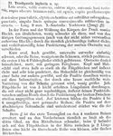

Click on images to enlarge
{kind=link}

Fig. 1. Trachymela ingloria description
Name
Trachymela ingloria Weise, 1917
Corresponds to
Possibly Ta91, but see Diagnosis and Notes below.
Diagnosis and Notes
It is clear from Weise's description that this species is one of the many in the alta-group of species that are widely distributed in the mallee regions of southern Australia. His description would best fit Ta91, which has at least VR1, VR3, VR5 and VR7 (sometimes also VR2 and VR9) in the form of thin, barely elevated ridges. The ventral surface is not black in any of the specimens I have seen, but is very dark brown in some. It is also very possible that this is a species that I have not yet seen.
Original description
Translation of original description (Figure 1) by ChatGPT, 06/2026:
Broadly ovate, very convex; underside black, antennae testaceous at the base; above dark brownish-red, rather dull; head and pronotum very densely punctulate; elytra extremely densely and rather finely, somewhat rugulosely punctate, each furnished with five slightly convex, almost smooth lines.
Length 9 mm. South Australia: Yorketown (Jung), ♂ ♀.
Most similar in form and convexity of body to Trachymela vomica Blackburn, only slightly narrower than that species, and very different from the remaining members of the genus (including the unrelated creberrima Blackburn) by the rather uniform, extremely dense, and comparatively fine punctation of the dull upper surface.
Shortly oval, strongly convex. Underside either entirely black, or with the legs, at least the tibiae, reddish pitch-brown; first 5–6 antennal segments reddish yellow-brown. Upper surface dark brownish-red, dull, with a slight greasy sheen. Head and pronotum punctured about half as strongly as the elytra, and extremely densely and very finely punctate. The pronotum is evenly convex from one side to the other; on the lateral area, which is separated from the disc by a scarcely perceptible broad depression, the punctures become only slightly larger. Each elytron is traversed by five slightly raised longitudinal lines. These are furnished with a not entirely regular row of extremely fine punctures and are encroached upon at the edges by the punctation of the broad intervals. On the latter, the punctures form 4–6 irregular, delicately rugulose rows. The punctures on the sloping lateral declivity are only slightly stronger than those on the disc.
In the male, the first tarsomere of the four anterior legs is expanded; on the forelegs it is almost as broad as the third tarsomere, on the middle legs narrower. In the female, a row of small, very flat tubercles occurs on the elytra midway between each pair of longitudinal lines; this row is easily overlooked.
References
Weise, J. 1917. Uber australische Chrysomelinen. Archiv für Naturgeschichte 82: 124-141 (page 133).
Copyright © 2026. All rights reserved.